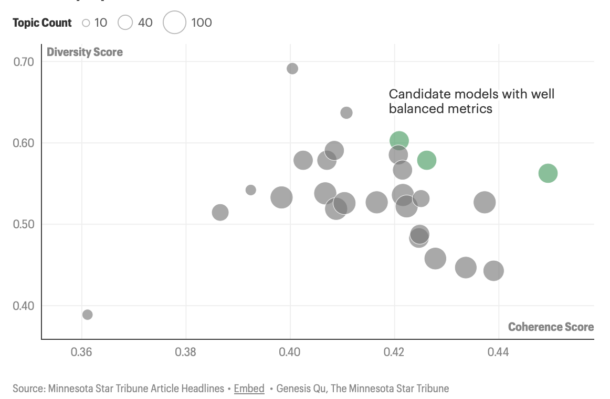
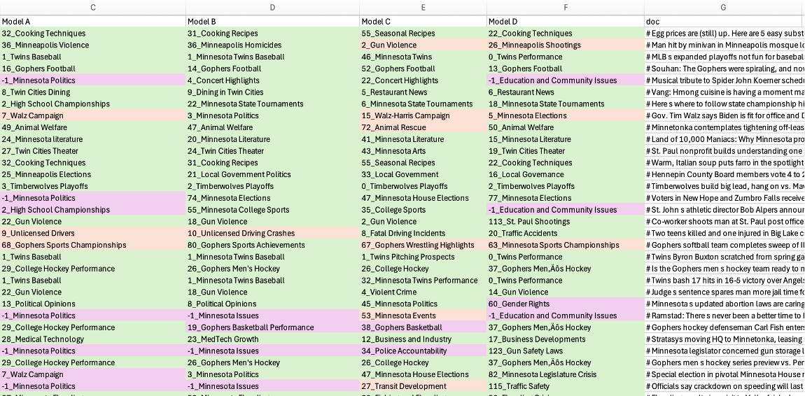
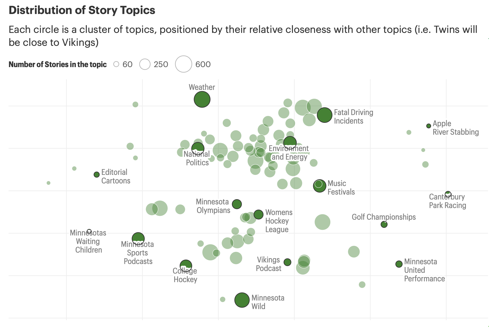
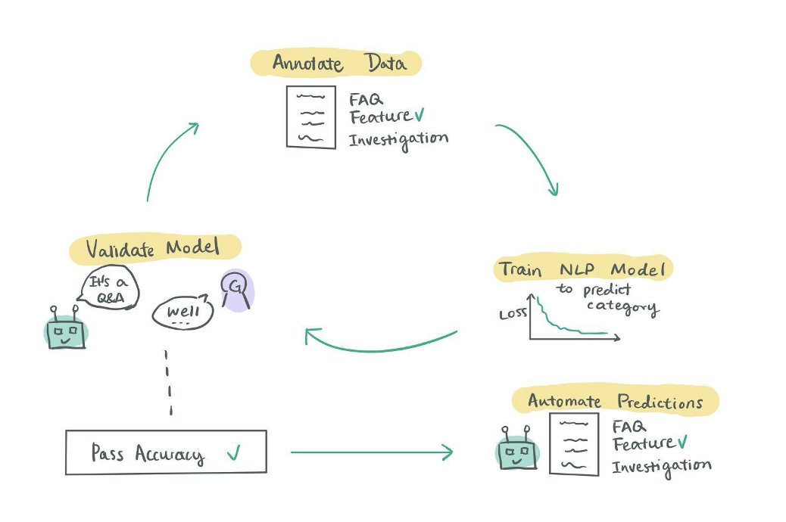
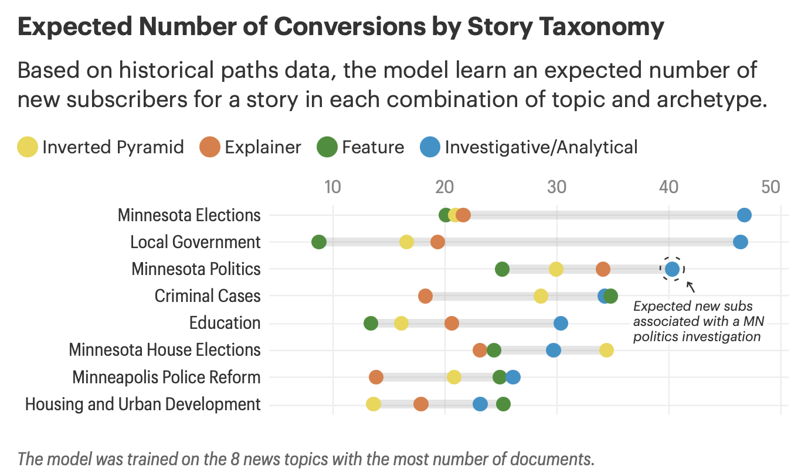

Starting with Editors
Before writing a line of code, we talked to reporters and editors. What, in their experience, moves the needle with readers? The answer came from every direction: the topic, yes — but also the format. An investigation into city government lands differently than a quick-hit news brief on the same subject. Both matter. Neither tells the whole story alone.
That conversation shaped two parallel modeling efforts: one to classify what a story is about, the other to classify how it's told.
Classifying Topics with BERTopic
For content topics, we used BERTopic — a modern approach to topic modeling that groups articles by semantic similarity rather than keyword overlap. Articles were pulled from MongoDB and routed through an ingestion pipeline into Snowflake for processing.
We trained multiple BERTopic variants across a range of embedding strategies, dimensionality reduction techniques, and clustering hyperparameters. Once clusters formed, we used an LLM to sample stories from each and assign semantically meaningful topic names — a step that turned opaque cluster IDs into labels editors could actually use.
Model selection relied on two complementary scores: coherence (are stories within a topic genuinely similar?) and diversity (are topics distinct from one another?). Finalists were then evaluated against a hand-labeled set of 100 articles, tested on exact and marginal correctness.


The final model surfaced a rich map of the Star Tribune's editorial terrain — from hyperlocal coverage like Minnesota House Elections to cultural beats like Music Festivals and Minnesota Wild hockey.

Classifying Story Archetypes
Topic alone doesn't explain performance. A feature story and an inverted pyramid on the same subject are fundamentally different products. To capture that, we worked with the news team to define four story archetypes:
- Inverted PyramidA medium-length, fact-forward news brief — the workhorse of daily coverage.
- ExplainerContext-first pieces that help readers understand complex situations: "What experts say," "Five things to know."
- FeatureLonger narrative pieces centered on a subject or person, rich with backstory and scene-setting.
- Investigation / AnalysisIn-depth reporting that uncovers hidden or complex facts through sourcing and data.
To generate training data, we used Prodigy, an annotation tool for unstructured text. Journalists and editors labeled hundreds of articles in a working lunch session, sorting stories into the four buckets.

With that labeled dataset in hand, we trained a multi-class deep learning classifier using spaCy, optimized on macro F1 score to ensure balanced performance across all four categories — including the rarest ones.
Editors sorted hundreds of stories in a single lunch. The annotations they produced in an afternoon became the foundation for a classifier that now labels thousands of articles a month.
What We Learned
With both models running, we could cross every article on its topic and archetype — and then model expected subscriber acquisition for each combination using regression.
The results were instructive. Investigations and analytical pieces are, unsurprisingly, among the most powerful acquisition drivers. But the archetype effect isn't uniform. The best format depends heavily on the topic.

For housing and crime coverage, for example, features — not investigations — were the strongest subscriber acquisition lever. That kind of finding gives editors something concrete: not just what to cover, but how to cover it.